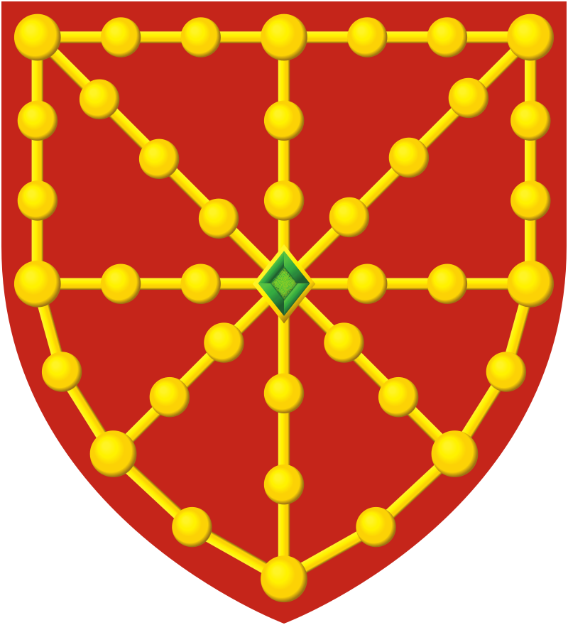

Bienvenue sur le site herriabihotzean.fr, destiné à tous ceux qui aiment le Pays Basque et souhaitent perfectionner leur connaissance de notre belle petite patrie.
Herria Bihotzean




Bienvenue sur le site herriabihotzean.fr, destiné à tous ceux qui aiment le Pays Basque et souhaitent perfectionner leur connaissance de notre belle petite patrie.